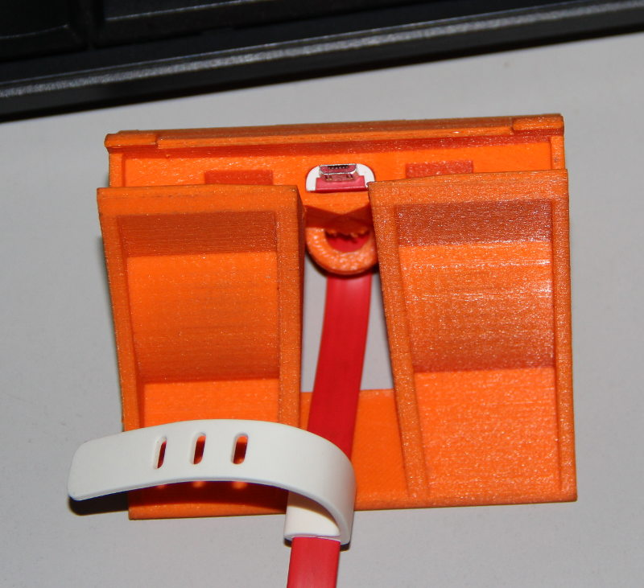

3D Scanning and Printing
Tasks for this module involves deep understanding about 3D printer, testing the 3D printer to it's limits to find-out its capabilities and limitations. Assignments also involves exploring various 3D scanning methods like Modella MDX-20 (R.A.P.S), Kinect other hardwares like LEAP. We have to design and print an object and explain why it can't be made subtractively, and optionally make a 3D scanner ourselves, print the scanned object.
3D Printing
This is an opportunity for learning and experimenting on the 3D printer. Me and Yadu have already assembled a 3D Printer ( RepRap Prusa i3). This is a perfect time to document our experience with this machine, we learned a lot while assembling and tuning the 3D printer. Documenting our experience will benefit other people who might face same troubles and will also help us because we can refer them later; our memories fade.
About 3D Printing
3D printing, as the name implies is a method for manufacturing 3 Dimensional objects. Its an additive manufacturing technology in which the object is created by many thin layers of 'solid' material. The 'ink' used has a non-negligible mass and volume, so each layer will have a finite thickness and successive layers make up the final object. The process is computer controlled and uses various 'inks' and technologies. Wikipedia page on 3D Printing is a good place to start.
Below is list a of many popular 3D-printing technologies
- Fused Deposition Modeling (FDM) or Fused Filament Manufacturer (FFF); one of the most common technology and used in RepRap, Ultimaker, MakerBot etc.
- Direct Ink Writing (DIW): like the chocolate printer, or the pancake printer or the the concrete printer .
- Stereolithography (SLA): Using photo-curable Resin and Laser like Form 2 .
- Digital Light Processing (DLP): Same as SLA but the light source and scanning is done by DLP projector like Carbon 3D Printer.
- Powder bed and inkjet head 3D printing (3DP): A binder liquid is 'inkjetted' on a powder bed, examples include Stratasys Polyjet.
- Electron-beam Melting (EBM): Electron beam is used to selectively melt and bind metal powder.
- Selective Laser Melting (SLM): same as above but uses Laser, so metal and non-metal can be used.
- Selective Laser Sintering (SLS): same as above but material is sintered, not melted and fused.
- Laminated Object Manufacturing (LOM): Each layer is cut from a sheet of material in pasted successively to build the final object.
Assembly, Challenges and Fixes
I have purchased the 3D printer kit by a Chinese manufacturer,
Sunhokey. I selected this model after a lot of searches and reading, it seems they have a good international customer base and there is an active community. So even
if I face any trouble, I can be sure about help.
This was the
Aliexpress page from which I made the purchase.
I also found
this set of detailed video about assembly, tuning and testing by a 'crazy' Youtube user,
Hiboson.
Me and three of my friends spent about 24 hours watching video, reading instructions, assembling and debugging, before we got the first print. Here are some pictures. These are some old pictures, the printer was assembled during the last week of July, 2015. And we never meant to publish any of these images, so, sorry for the bad quality.
Cable Management
The steppers had long cables and they were making a lot of problems, but I didn't want to cut them. So I decided to braid them (sixth picture). I used a lot of zip-ties too for cable management.
Print Bed
The print bed is a heated aluminum plate, with a yellow masking tape on it, so that the printed part can be removed easily and without damaging the aluminum bed.
Steppers Spinning The Wrong Way
The printer kit comes with an LCD and rotary switch to control, one based on this.
Once we powered the machine and selected 'auto-home' function, printer was going crazy, and we had to kill the power immoderately. The X-axis motor moves left when it was supposed to
move right, one of the Z-axis motor was also spinning the other way. This is more dangerous as the z motors spinning the opposite way means the z carriage will bend and
eventually break. There are two fixes for it.
- Edit the firmware to reverse the motor's forward/default rotation direction.
- Swap wires from one of the two armature windings in the stepper.
I went with the second method as it was easier at the moment, also when I don't have to redo this again when upgrading the firmware later.
The stepper motor used in this printer (or most of the steppers used these days) is a bi-polar one. It has the armature windings as follows.

image from
ebldc
The stepper driver reverses the direction of rotation by reversing the current flow through one of the coil (done using the H-bridges). If we were to manually do this,
we can fix the direction of rotation. First step is to identify pins corresponding to each coil, of the the 4-pins in the connector, this can be done with the help of a
multimeter. Once identified, the pins of any one of the coil can be swapped. The pins can be removed from the connector by pressing on the retention clip and pulling on
the wire simultaneously.
Clogging and leaking
We had faced clogging problems multiple times and the material was leaking out. The clogging mainly happens when using the printer after a few days of not using it, very likely because
of the accumulated dirt. In such case extruder has to be detatched from the assembly and unscrew the nozzle-heater section and remove all the leftover plastic from inside.
Unscrewing is easier when the nozzle is at about 180 ℃. Once the nozzle is removed, heat it till about 200 ℃ and put a piece of scrap the same plastic filament
and once it is molten and flows well inside the cavity, let it cool down to about 120℃-100℃. Once 'cooled' pull on the filament slowly to get all the material
inside the nozzle.
I had to fix the leaking too. I just did what a plumber do, clean the threads and apply enough PTFE tape to get a proper seal. The thread seal was wound around the thread
and the nozzle was screwed to the heat-sink part when it was about 200℃ hot, this is because when I assemble the pieces cold and heat, it becomes loose again as a result
of thermal expansion.
Firmware, driver, slicer....
The kit comes with
MKS Gen-2Z v1.1 board loaded with
repetier-firmware. The board is actually a single board solution of Arduino-Mega-2560 and
RAMPS 1.4. For the controlling system, we have to install
Repetier-Host. The software has all the drivers and slicer engines, also software is available for Windows, Linux and Mac platforms.
Once installed and connected, the host software is able to control the machine via its GUI, it's much better, easier and has more feature than what the built in control
panel provides.
Once everything is working, there are two ways to actually transfer the data to the printer. One method is via the USB serial interface between the printer and the Repetier-Host. Other method is to generate the G-Code file using any software (but with the correct parameters for this printer) and put it an SD-card and print from it. The printer has an SD-Card reader built into the LCD control module.
Before start printing, the printer bed has to be leveled and tuned.
Tuning
The printer bed has to be leveled first. Even before this, we have to level the printer itself and more importantly the Z-carriage. A spirit-level and a leveled and flat surface is
recommended for this step(and recommended for normal operations too).
Once the printer is on the flat, horizontal surface, first thing to do is level the Z-carriage. This is very important step and printer should be switched off during this
step. We have to keep the spirit level on the Z-carriage. Its tricky, but doable, if you move the head to a side and keep the spirit-level on the smooth rods. The leveling
is done by manually rotating one of the Z-steppers until you get a horizontal Z-carriage.
After leveling the Z-carriage, now its time for leveling the bed and setting the Z-axis home position. The Z-axis-endstop micro-switch was mounted on an adjustable mount, and can be
adjusted for coarse changes. For fine tuning the Z-stage the screw which is going to hit the Z-end-stop has to be used.
For the bed-leveling, there are four thumb screws on the bed to adjust the height. Use these screws to keep the bed level. I leveled by adjusting the screws such that head
will leave a small gap, just enough for a sheet of paper. This was done on all four corners, and the control panel on the printer was used to move the head to the required
position.
Though made for Ultimaker, this guide can helpful for most of the FDM printers, very useful for troubleshooting.
Testing and Printing
We made a couple of small test prints over the time. Large prints were impossible due to irregular power supply here. Many prints failed due to power-failure, I wish there was an option
to resume prints even after rebooting/power failure(I can try this in future). As the printer consumes a lot of power when it is working, even a normal consumer level Desktop
UPS is incapable of keeping the printer online for more than a few minutes. One major issue is the inefficient AC-DC-AC conversion in the UPS, the printer require only 12v
DC, the UPS's internal battery is a 12v Lead-Acid battery, but when we use UPS, the UPS first converts the 12v to 230v AC and then the SMPS of the printer converts it back
to 12v DC. The overall efficiency of this process will be about 50% only. I'm thinking about making an online UPS designed specifically for this printer, consisting of a
decent 12v Lead-Acid battery, a 12v stabilizer/battery protection circuit and a power-supply capable of charging the battery and simultaneously supply enough power to the
printer. This might be the next assignment.
Once I get to connect the printer to an UPS from Yadu's home, we test printed a
clip for supporting the LCD panel as it flexes while using the push button (reset) or the rotary switch. The design is from
Thingiverse.
Some more pictures can be seen below.
Testing the 3D-Printer
There was a group assignment we have to do. The goal was to print a test object and study what the printer can do. The thing is I'm not that interested in the testing of Ultimaker because
Ultimaker is a standered machine and the capabilities are documented very well. The deviations if any will happen mainly because of 'human error', that is imperfectly aligned
bed, wrong print settings like feed rate, head/nozzle temperature, print speed, retraction, fill density, type of support used, type of platform adhesion used etc.
But these things will vary from design to design, and will also depend on the material we use. We cannot test it all here, though we can test some aspects, the rest will
be called the 'experience'.
The fact is that I wanted to test my 3D printer well, it's something I assembled and I don't know the limitations of the machine. I didn't get enough time to do that properly
because of the hectic schedule of the Fab Academy, so I'll be making some conclusions from the few test prints I have made using my printer.
Then I'll also talk about the test print we have done as a group assignment.
Conclusions From the Test Prints Out of the Assembled 3D-Printer.
After the bed leveling and sealing the head with PTFE tape, the printer is printing well, Sometimes there is under extrusion, but that I'm guessing is mainly because of the humidity and the dust accumulated on the PLA filament, because cleaning the filament and warming it in sunlight for day fixes the problem for a few days. Our place is really humid, have to find a way to keep the filaments safe.
The 1cm x 1cm x 1cm cube we printer came out nicely and was within the margins of error. The bottom was slightly wider, actually the first few layers form a bell like shape. This was later resolved and was caused by the slightly raised print bed. Another cause was the bed heating, we were printing on the masking tape on the bare aluminum heated bed. The heating is not uniform and there are 'hot-spots'. If I'm printing on top of one of these, it will overheat, warp and deform. The solution is to use a glass plate on top of the aluminum bed, which will spread the heat evenly. The print may even stick better.
Other characteristics, like printing speed and limitations on the overhang angle etc appears to be the same as that of most entry level 3D printers.
Testing the Ultimaker
We printed a
popular test pattern from thingiverse. The settings were mentioned in the web page too.
The test print has the following tests in it.(list taken from the thingiverese page)
- 01 Nut, Size M4 Nut should fit perfectly
- 02 Wave, rounded print
- 03 Star, Sharp Edges
- 04 Name, Complex Shapes
- 05 Holes, Size 3, 4, 5 mm
- 06 minimal Distance: 0.1, 0.2, 0.3, 0.4, 0.5, 0.6, 0.7 mm
- 07 Z height: 0.1, 0.2, 0.3, 0.4, 0.5, 0.6, 0.7, 0.8, 0.9, 1.0, 1.1 mm
- 08 Wall Thickness: 0.1, 0.2, 0.3, 0.4, 0.5, 0.6, 0.7 mm
- 09 Bridge Print: 2, 4, 8, 16 mm
- 10 Sphere, Rounded Print 4.8mm height
- 11 Sphere Mix, 7 mm height
- 12 Pyramide, 7 mm height
- 13 Overhang: 25, 30, 35, 40, 45, 50, 55, 60, 65, 70°
- 14 Warp, does it bend?
- 15 3D Print Font, optimized for 3D printing
- 16 Surface, Flatness
- 17 Size, 100 x 100mm x 23.83 (10mm width)
- 18 Spike, minimum Layer Time, 21 mm height from Bottom (include Baseplate)
- 19 Hole in Wall, 4 mm diameter, check for proper print
- 20 Raft Test, raft should be just under the model
- 21 Retract Travel, check retract settings for longer travel
Conclusions
The Result is good and it was expected, because this is what I have found from my searches through many Ultimaker forums, almost all users report similar results. No surprises here.
Here is the list of where the test failed.
- Wasn't able to print any gap less than .5mm, even the .5mm was not .5mm it seems much narrow.
- Same with the walls, no walls thinner than 0.5mm.
- The spike is 17mm instead of 21mm.
Overall I feel like this was a test meant for my printer, which I'll do one day, when I spent enough time at home (after the academy?).
3D-Printing Assignment
Now it's time for the assignment. We are supposed to print something that can't be made subtractively. After a little thought I decided to print a mobile stand/dock with audio canals for redirecting the sound. Such a Dock will have internal channels for directing audio, and this is something that cannot be made using even the most advanced CNC mill, absolutely no way to create subtractively as a single piece, because no tool can get inside the solid block to carve out complex cavities.
Dock for OnePlus One
After a few searches I found a design at Thingiverse (the design may be different from what I made as the designer refines it often). Once I had the design I edited the .stl file using Rhino3D. I replaced one of the Oneplus logo with my logo. For this I loaded the .stl file and duplicated the edges of the logo using 'DupEdge' command. Then the new lines are joined together to a continues curve and this curve is used to extrude a solid which will fill the logo.
The extra horse-shoe shaped object is a retention clip for fixing the Oneplus charging cable in place.
Now the oneplus logo is gone, and next step is to embed my logo over there. I had made the logo long time back, and I had the .svg file with me. This file was imported to the design
file and moved and rotated as required to bring it to the surface from which I removed the logo before.
Then I select the curve of my logo and extruded about 2mm outwards so that my logo will protrude a bit from the final print.
here is the final design hosted at
Sketchfab
oneplus dock by sibu on Sketchfab
This design is not perfect as the mesh has a lot of unwanted vertices and faces, perhaps 10 times more than what is really required. This happened while I edited the original .stl file.
Pictures
 zoom-in; single click => normal size" ondblclick="this.width='800'" onclick="this.width='250'">
Klein Bottle
This is another design I made,
Klein Bottle, this structure is something similar to
Mobius Strip, a one sided one edged surface. A true Klein Bottle is a 4-Dimensional object and what I designed/going to make is a 3D-projection/Immersion of the true
Klein Bottle. In other words it's similar to seeing a photograph, which is 2D, but the object seen in the photograph may be 3D, so we see a 2D photograph of a 3D object.
Just like that what I'm going to make is a 3D-photograph or a 3D-print of the 4D-Klein bottle.
Klein-Bottle by sibu on Sketchfab
This was a quick design in Rhino3D. I saw Yadu trying to design another version of this after getting inspired by a talk by Matt Parker. I extruded two circles along two rails, which is actually the cross section of the Klein-Bottle. The actual cross section would be a single line, so I broke the line at the bottom, in to two segments and used them as the rails for the circles to sweep (sweep2). The two circles are necessary, as the two will create a solid wall, else the object will be just a shell without any thickness and it cannot be 3D-printed. Then the bottoms where capped to close and a solid base was created to give the bottom some thickness. Also 'trim' command was used to create the hole which should have been there at the intersection of the surface(at the bottom of the 'handle').
This again is an object impossible to be made subtractively, there is no way the tool can reach the inside of the bottle.
Random
Below is a video of a print with a overhang structure, but without the support structure. So the wheel of the car is getting printed on air, and the material just drops. This was a
print by
Vinod and I took this video when I saw it. The print recovered somewhat, this could be due to the fact that the overhang structure is not that wide and also because
the separation between the overhang and the nearest 'platform' is very less.
3D Scanning
As the name implies, this is a process of getting a computer model of a real object by scanning/mapping it. In our lab we have access to
- Modela with R.A.P.S scanner head.
- Kinect
- Intel Real Sense
- Equipment for trying 'milk scanning'/subversive scanning.
- Equipment for trying structured light scanning.
- Equipment for capturing 3D image with 123D Catch .
Modela R.A.P.S
Roland Active Piezo Sensor (R.A.P.S.) uses a needle attached to a Piezo element which will probe the surface to be scanned, this can be analogues to how a blind man
'feels' texture of a surface to get a mental picture.
It's a process that is painfully slow, even more so if you want the finest quality.
The above settings are for a draft scan, where the head goes along X-Y grids with the mentioned pitch at varying heights.
At first, before you scan, you might want to test the area.
Here are snapshots of the result of the draft scan, which took about 3 Hrs.
Now lets do a fine scan.
As we have already seen, a draft scan took about 3 hrs, so a fine scan with 0.4mm or 0.014" pitch will take a long time. So I removed one object to save time,
still it took about 8 hrs.
Here is video showing a part of the whole scanning procedure.
I enabled the smart scanning feature, which will, after a draft scan, restrict the scanning to a small envelope covering the model, saves a lot of time.
As evident I just went the other way round, instead of printing an object I scanned, I scanned an object I printed and compared to the original design and the original print.
It's clear that this scanning technique, given time can do a very good quality scan, I can get a scan that is way better than what I have done, the machine can do 0.001" steps in Z and 0.002" steps in X/Y, that's the resolution it can do. In my scan I used 0.014", 7 times less resolution. But I'm guessing it's going to take at least 5 times more time to do this. So I won't be doing that.
In fact the scanning process reminds me of an Atomic Force Microscope or Scanning Tunneling Microscope. First one uses a laser reflection of a mirror at the end of a tiny cantilever with fine tip scanning the surface, The second detects the tunneling current between the tip and the surface. Both of them are very close to the scanning method here.
Here is good utility I found to view tool-paths form the Gcode. It's helpful in analyzing and debugging the 3D prints.
http://gcode.ws/
The source is available at github which can be cloned to have an offline version of this tool, I use it all the time, better than Cura's layer viewer.
todo
- Explore slstudio
- Subtractive scan, like milk scanner. (done(failed attempt though!), as a group assignment, need to document)
- Acetone vapor bath